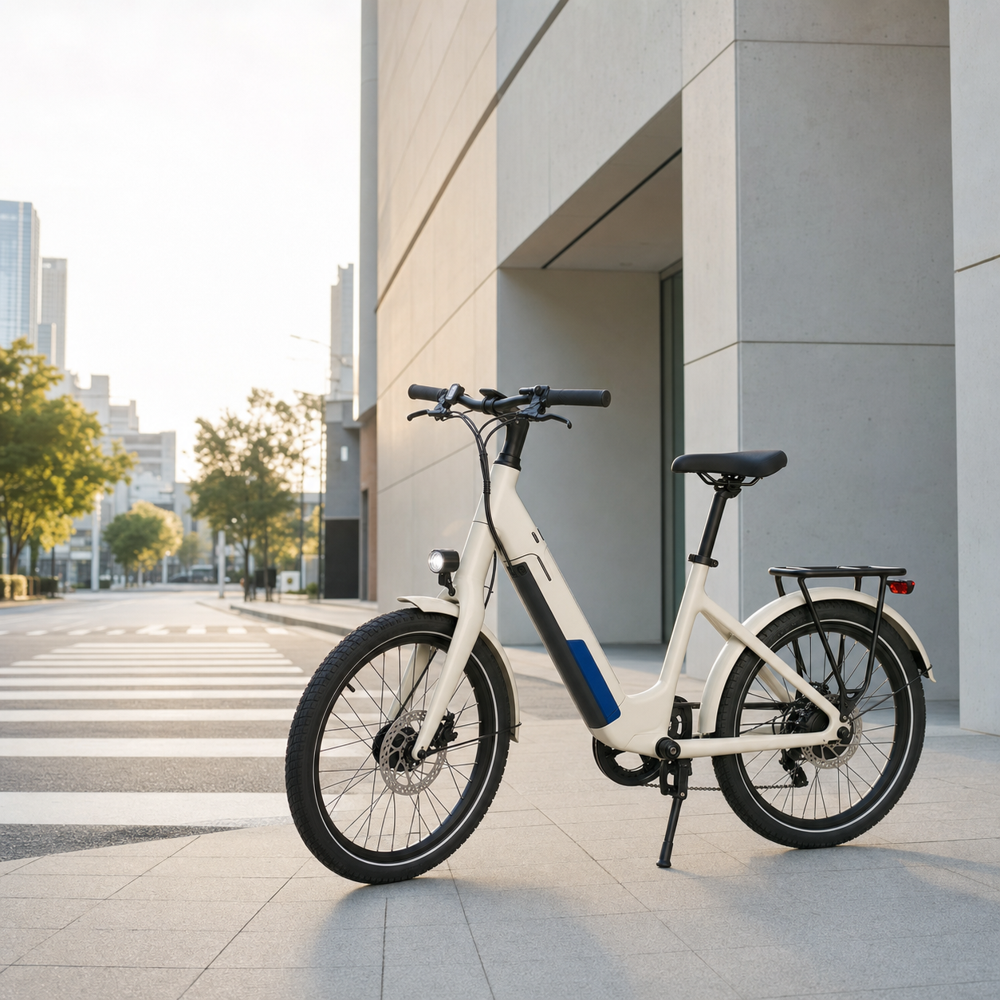
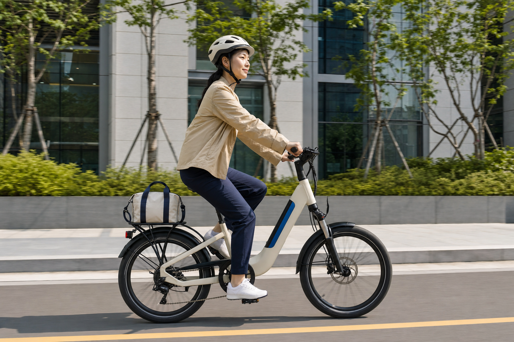
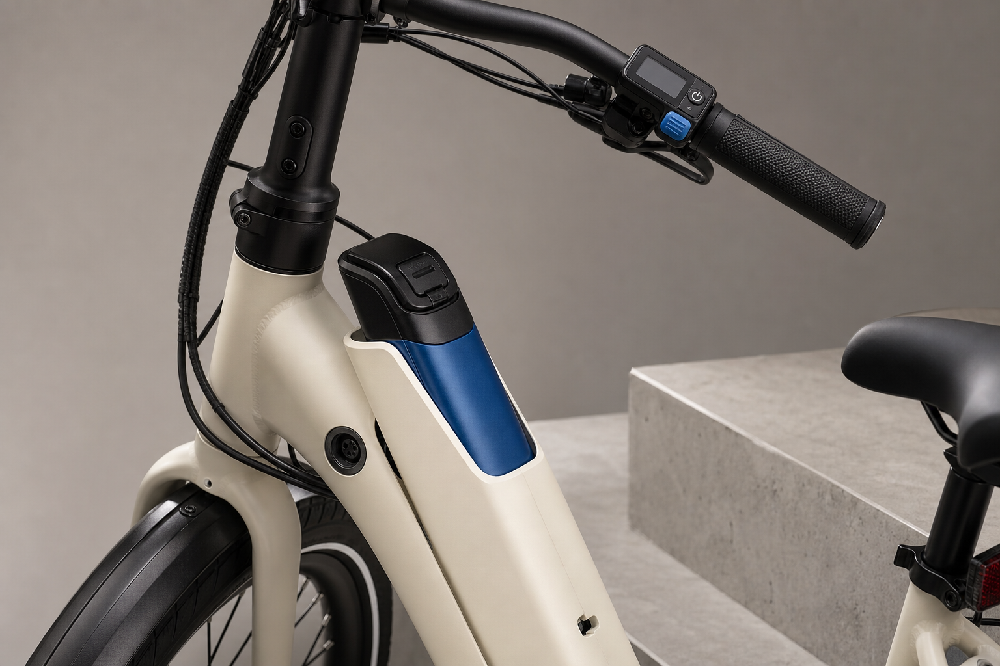
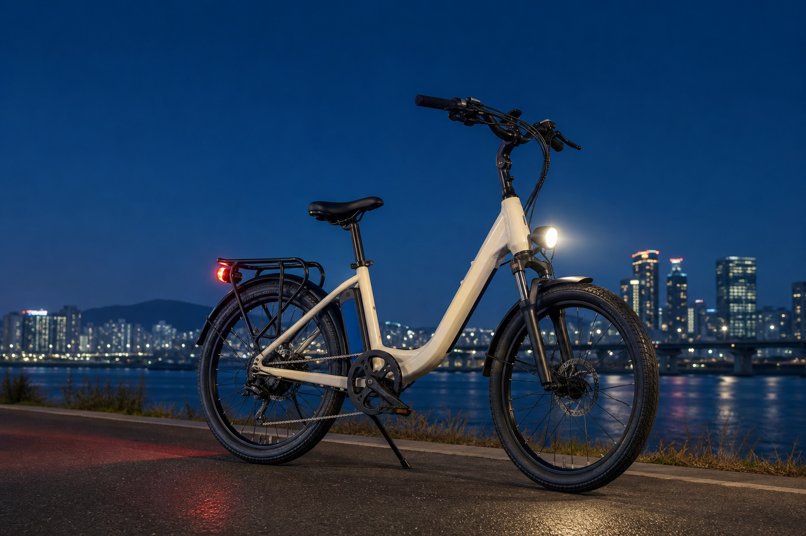

Move lightly, arrive freshly
도시를
가볍게
건너는 법.
출근길의 언덕도, 퇴근길의 바람도.
내가 원하는 만큼만 힘을 더하는 도심형 전기자전거.
01매일의 이동을 위한
가장 단순한 선택
가장 단순한 선택

M1 · IVORY / COBALT08:10집에서 출발
08:24한강 자전거길
08:42사무실 도착
도시의 12km를
다시 설계하다.
복잡한 환승도, 꽉 막힌 도로도 지나칩니다. 부드러운 페달 어시스트가 평범한 이동 시간을 나를 위한 시간으로 바꿉니다.
60한 번 충전으로
최대 주행거리 KM*
최대 주행거리 KM*
KM/H
어시스트 모드
HOUR

03 / RIDE NATURALLY페달은 그대로.
페달은 그대로.
호흡은 더 여유롭게.
토크를 감지해 필요한 순간에만 자연스럽게 힘을 보탭니다. 출발은 부드럽게, 오르막은 가볍게.
+POWER
WHEN YOU NEED
WHEN YOU NEED

REMOVABLE BATTERY / USB-C PORT04 / SIMPLE CONTROL보고,
보고,
누르고,
달리세요.
엄지손가락이 닿는 위치에 꼭 필요한 기능만 배치했습니다. 배터리는 프레임에서 분리해 집과 사무실 어디서든 충전할 수 있습니다.
- ECO오래 달리는 가벼운 도움
- CITY출퇴근에 알맞은 균형
- CLIMB언덕에서 든든한 힘
05 / MADE FOR THE CITY멈추고,
멈추고,
싣고,
다시 출발.
옷차림에 상관없이 편하게 타고 내립니다.
갑작스러운 정지에도 부드럽고 안정적으로.
업무 가방부터 장보기 짐까지 단단하게.
좁은 골목과 코너에서도 민첩하게 움직입니다.

06 / VISIBLE AFTER DARK밤이 와도
밤이 와도
이동은 선명하게.
전원을 켜면 함께 작동하는 전조등과 후미등. 어두운 길에서는 시야를 밝히고, 도로 위에서는 나의 위치를 분명하게 알립니다.
AUTO LIGHTREAR SAFETYREFLECTIVE SIDE
MILE 01 · URBAN STARTER SET
내일의 출근을
오늘보다 가볍게.
MILE 01 본체 · 분리형 배터리 · 전용 충전기 · 리어 랙 · 기본 점검 서비스
₩1,790,000라이딩 시작하기 →